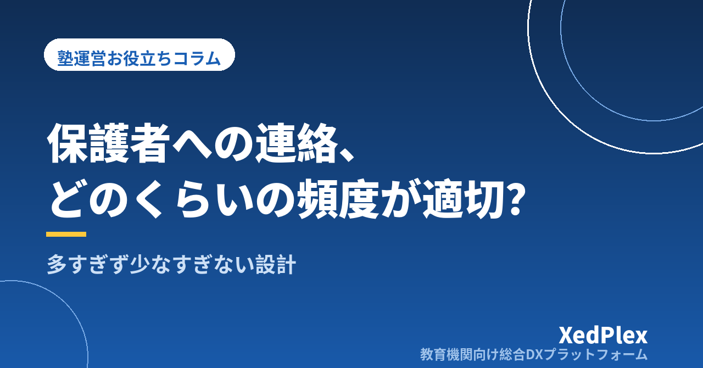

塾の保護者連絡、適切な頻度は？｜多すぎても少なすぎても不安になる連絡の頻度と内容の設計

「最近、塾から何の連絡もないんですが、うちの子、ちゃんとやれていますか？」──面談の席でこう言われて、内心ひやりとした経験はないでしょうか。一方で、こまめに連絡しようと毎回の授業後にメッセージを送っていたら、既読はつくのに返事がなくなり、「もしかして迷惑なのでは」と手が止まってしまう。個人塾・小規模塾の塾長からは、この両方の悩みをよく聞きます。
保護者連絡は、少なすぎれば「放っておかれている」という不安になり、多すぎれば「対応しきれない」という負担になります。ちょうどいい頻度は塾によって違いますが、決め方には共通の考え方があります。この記事では、連絡を4つの層に分けて頻度を決める方法、短くても伝わる内容の型、塾長ひとりでも続けられる仕組みを整理します。
なぜ「多すぎても少なすぎても」不安になるのか
保護者が連絡に求めているのは、実は「量」ではありません。知りたいのは「今、うちの子はどういう状態か」「何かあったら教えてもらえるのか」の2点です。この2点が満たされていれば連絡は月に1回でも安心できますし、満たされていなければ毎日届いても不安は消えません。
そう考えると、連絡がうまくいっていない塾には、次の3つのパターンのどれかが当てはまります。
| パターン | 起きていること | 保護者の受け止め |
|---|---|---|
| 沈黙型 | 入塾後、面談まで塾からの連絡がほぼない | 「何も言ってこないということは、見てもらえていないのでは」 |
| 一斉配信だけ型 | お知らせは頻繁に届くが、わが子の話は一度も来ない | 「連絡は多いけれど、うちの子のことは分からない」 |
| 返信要求型 | 毎回の授業後に長文の報告が届き、確認や返信を求められる | 「ありがたいけれど、正直つらい」 |
3つに共通するのは、連絡の「種類」を分けずに、ひとつの手段・ひとつの頻度で全部をまかなおうとしていることです。保護者連絡の手段の整理では「緊急連絡・事務連絡・学習報告」を分ける話をしましたが、この記事ではそれを「頻度」の観点から設計していきます。
連絡を4つの層に分けると、頻度は自然に決まる
塾から保護者への連絡は、目的と負担の大きさで次の4層に分けられます。層ごとに頻度と手段を決めておくと、「多い・少ない」の悩みは「どの層が足りないのか」という具体的な問いに変わります。
| 層 | 内容 | 頻度の目安 | 手段 | 保護者の負担 |
|---|---|---|---|---|
| ①自動通知 | 入退室、欠席の受付確認 | 毎回（自動） | LINE・メールへの自動送信 | 読まなくてもよい。ほぼゼロ |
| ②定期報告 | 学習の様子、宿題の状況、次の目標 | 週1回〜月1回 | 指導報告書・短いメッセージ | 読むだけ。返信不要 |
| ③一斉のお知らせ | 休講、講習、請求、行事 | 月1〜2回＋必要時 | 一斉配信 | 読むだけ。締切があれば行動 |
| ④個別の連絡・面談 | 異変の共有、相談、進路の話 | 都度＋年2〜3回の面談 | 電話・個別メッセージ・対面 | やり取りが必要 |
ポイントは、保護者に負担のない①②を「厚く」、負担のある④を「必要なときに確実に」にすることです。①の自動通知は毎回届いても負担になりません。「今日も来ている」という事実の積み重ねが、「見てもらえている」という安心の土台になります。入退室通知の仕組みがある塾で「連絡が少ない」と言われにくいのは、このためです。
逆に、④の個別連絡を「まめさ」の証としてやろうとすると、塾長が消耗し、保護者も疲れます。個別連絡は「気になることがあったとき」に絞り、その代わり気になることを見逃さない記録の仕組みを持つ、と考えましょう。
頻度の目安は学年・コース別に調整する
4層の目安を決めたら、生徒の学年やコースで調整します。全員同じ頻度にすると、必要な家庭には足りず、不要な家庭には多すぎることになるからです。あくまで一例ですが、次のような考え方です。
| 対象 | ②定期報告 | ④面談 | 考え方 |
|---|---|---|---|
| 小学生 | 月1回（授業の様子中心） | 年2回 | 本人からの報告が少ないため、「楽しく通えているか」「何をやったか」を塾から伝える |
| 中1〜中2 | 月1回＋定期テスト後 | 年2回 | テスト結果と次の対策をセットで。日常はポイントを絞る |
| 受験生（中3・高3） | 2週に1回〜週1回 | 年3回＋必要時 | 不安が高まる時期。短くても頻度を上げ、面談は出願時期に合わせる |
| 入塾後1〜2か月 | 学年に関係なく2週に1回 | 1か月面談 | 「入って良かった」を早めに実感してもらう期間。ここだけは厚めにする |
もうひとつ大事なのが、家庭ごとの希望を入塾時に聞いておくことです。「連絡はLINEとメールどちらがよいか」「報告はどのくらいの頻度が読みやすいか」を申込書や初回面談で確認し、名簿にメモしておくだけで、「多すぎる」「少なすぎる」の大半は防げます。
内容の設計：短くても「わが子の話」が入っているか
頻度と同じくらい大切なのが内容です。連絡の数は多いのに信頼につながらない塾は、内容に「その子固有の情報」が入っていないことがほとんどです。逆に言えば、3行でも「わが子のこと」が書いてあれば、保護者は読みますし、安心します。
定期報告は「事実・変化・次」の3行で足りる
定期報告は長文にする必要はありません。次の3つが入っていれば十分です。
【例：月1回の定期報告】
今月は英語の不定詞の単元を進めました（事実）。
最初は語順で迷っていましたが、後半の確認テストでは8割正解できるようになっています（変化）。
来月は長文読解に入るので、単語の復習を宿題に組み込みます（次）。
※このメッセージへの返信は不要です。ご質問があればいつでもお知らせください。
末尾の「返信は不要です」の一文は、保護者の負担を下げる効果が大きい割に、書き忘れがちな要素です。「読むだけでよい連絡」と「対応が必要な連絡」を、文面ではっきり分けておきましょう。報告書の書き方や時短のコツは指導報告書の書き方で詳しく整理しています。
一斉のお知らせは「1通1用件・締切明記・送る曜日を固定」
一斉配信は、頻度そのものより「読みにくさ」が負担になります。複数の用件を1通に詰め込まない、保護者に行動を求めるときは締切と方法を1行目に書く、送る曜日と時間帯を固定する（たとえば毎週金曜の夕方）の3つを守るだけで、同じ回数でも受け止め方が変わり、見落としも減ります。
個別連絡は「良い知らせ」にも使う
個別連絡が「問題があったときだけ」になっていると、塾からの着信そのものが不安の種になります。「今日は自分から質問に来ました」といった良い変化も、月に1人か2人、気づいたときに1〜2行で送ってみてください。それだけで「先生はうちの子を見てくれている」という印象が積み上がります。これは退塾を防ぐ保護者コミュニケーションで書いた「信頼の積み上げ」の、いちばん手軽な実践です。
「連絡の年間カレンダー」を1枚にしておく
頻度と内容が決まったら、年間の見取り図に落とします。塾の連絡は月ごとに「必ず送るもの」がほぼ決まっているので、1枚にしておくと毎回考えずに済み、送り忘れも防げます。
| 時期 | 一斉のお知らせ | 個別・面談 |
|---|---|---|
| 3〜4月 | 新年度の時間割・料金・年間予定 | 新入塾生の1か月面談 |
| 6〜7月 | 夏期講習の案内・申込締切 | 1学期の定期報告に加えて希望者面談 |
| 9〜10月 | 2学期の予定、模試の案内 | 受験生の進路面談 |
| 11〜12月 | 冬期講習・年末年始の休講 | 受験生の出願確認 |
| 1〜2月 | 新年度の継続確認・料金改定の案内 | 全学年の学年末面談 |
| 毎月 | 請求のお知らせ、休講・行事 | 定期報告（学年別の頻度で） |
自塾の講習時期や地域の定期テスト日程を書き足せば、そのまま運用できます。面談の段取りは保護者面談の準備を、講習の案内と申込の流れは季節講習の申込管理を参考にしてください。
- 面談で「最近どうですか？」と保護者から先に聞かれる → ②定期報告が足りていない
- 一斉配信の既読は多いのに、締切の反応が薄い → ③の内容が読みにくい、または多すぎる
- 退塾の申し出が「突然」に感じられる → ④の異変共有と、日々の記録が足りていない
塾長ひとりでも続けるための仕組み
ここまでの設計は、頭では分かっていても「続かない」のが最大の壁です。続けるコツは気合いではなく、層ごとに「人がやらなくていい部分」を減らすことです。
- ①自動通知は完全に自動化する：入退室の通知を人が送っている塾は意外と多いのですが、ここは仕組みに任せる部分です。QRコードやカードで記録し、そのままLINEやメールに届く形にすれば、毎回の連絡が塾長の作業からゼロになります。
- ②定期報告は型と締切を決める：3行の型に加え、「毎月最終週の授業後に書く」と締切を固定します。授業後にその日の様子を1行メモしておくと、月末にまとめて書く負担が大きく減ります。
- ③一斉配信は1つのツールに集約する：紙とLINEとメールが混在すると、誰に何が届いたか分からなくなります。配信の履歴が残るツールに一本化します。必要な機能は保護者連絡アプリに必要な機能で整理しています。
- ④個別連絡は記録とセットにする：いつ、誰に、何を伝えたかを生徒ごとに残しておくと、次の面談や講師の引き継ぎで「言った・言わない」を防げます。クレーム対応の記録と同じ場所に残すのが理想です。
保護者から見て、通知・報告・お知らせ・面談の記録がひとつの画面で確認できる状態になっていれば、「連絡が来ない」という不安は起きにくくなります。連絡の頻度を上げるより、いつでも見に行ける場所があることのほうが、安心には効くのです。
まとめ
保護者連絡の適切な頻度は、「週1回」「月1回」といった一律の答えではなく、連絡を4つの層に分け、負担のない層を厚く、負担のある層を必要なときに確実にという設計で決まります。自動通知は毎回、定期報告は学年に応じて週1〜月1、一斉のお知らせは月1〜2回で曜日を固定、個別連絡は気づいたときに短く。そして内容には、3行でもいいので「わが子の話」を入れる。まずは、今の連絡を4つの層に振り分けて、どこが足りていないかを確認するところから始めてみてください。
この記事を書いた運営より
私たちは、個人経営・小規模の学習塾向けに、生徒管理・QRコードでの入退室記録・月次請求・保護者へのLINE/メール通知・AIによる学習支援までをひとつにまとめた教育機関向け総合DXプラットフォーム「XedPlex（ゼドプレックス）」を開発・提供しています。初期費用は0円、料金は生徒1名あたり月額300円（税込）から。生徒50名の塾なら月15,000円（税込）です。全国8つの教室で導入されており、導入塾には紹介ホームページの無料作成も行っています。機能の詳細説明はこちら。
XedPlexの詳細を見る